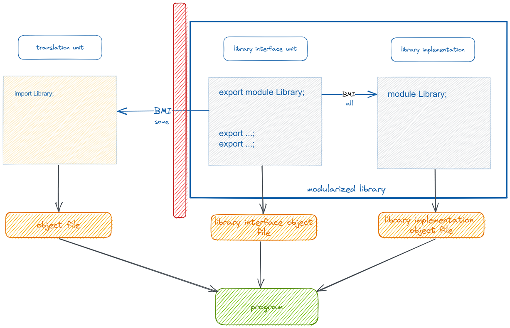

Moduły#
Dlaczego?
potrzeba lepszego skalowania komponentów C++ (
>1'000'000LoC)długie czasy kompilacji (duża część kodu jest w plikach
.hpp)
Zalety
szybsze czasy kompilacji
możliwość lepszej hermetyzacji kodu

Binary Module Interface (BMI)#
Plik Binary Module Interface zawiera pre-kompilowaną zawartość modułu (wszystkie eksportowane z danego modułu symbole).
Module unit (jednostka modułowa)#
Do C++20 podstawowym elementem enkapsulującym jednostkę kodu była jednostka translacji (translation unit)
Moduły C++ wprowadzają nowy typ jednostki translacji - jednostkę modułu (module unit)
Jednostka modułu (module unit) jest to jednostka translacji zawierająca deklarację modułu (module-declaration)
w praktyce jest to dowolny plik, który zawiera na początku deklarację modułu
module Name;
Attention
Moduł C++ może składać się z kilku jednostek modułowych (module units)
Rodzaje jednostek modułowych#
module interface - jednostka modułowa, w której deklaracja modułu zawiera słowo
exportw ramach jednego modułu może istnieć wiele takich jednostek
module implementation - jednostka modułu, która nie jest jednostką interfejsową
brak słowa
exportw deklaracji modułumodule Name;
module partition - jednostka modułu, której deklaracja zawiera komponent partycji modułu
Partycje modułów#
module interface partition - jednostka interfejsu, która jednocześnie jest partycją modułu
zawiera w deklaracji zarówno słowo
exportjak i nazwę partycjiexport module Name:Part1;
module implementation partition - jednostka implementacji, która jednocześnie jest partycją modułu
zawiera komponent partycji, ale bez słowa
exportmodule Name:Part1;
Aby mieć dostęp do deklaracji umieszczonej w innej partycji, partycja musi zaimportować żądaną partycję (nie wystarczy import modułu jako całości):
module Name:Part2;
import :Part1;
Podstawowa jednostka modułu (primary interface unit) musi importować i re-eksportować partycję w następujący sposób:
export import :Part1;
export import :Part2;
Podstawowa jednostka modułu (primary interface unit) może zaimportować module implementation partition, ale nie może jej eksportować. Jednostki implementacji nie mogą być eksportowane.
Podstawowa jednostka interfejsu#
primary module interface - jednostka interfejsu, która eksportuje nazwę modułu
nie jest partycją modułu
może być tylko jedna w module - wszystkie inne jednostki interfejsu muszą być partycjami modułu
export module Name;
Nazwy modułów#
Nazwa modułu może być dowolnym identyfikatorem
dozwolone jest użycie wielu symboli
.(np.boost.asio.async_completion)symbol
.ma tylko znaczenie wizualnenazwa modułu może być wykorzystana później do czegoś innego (np. przestrzeni nazw, definicji klasy, funkcji, itp.)
Attention
Moduły C++ nie wprowadzają automatycznie przestrzeni nazw
Eksport z modułów#
Deklaracja export#
Deklaracje eksportu mogą być używane tylko w przestrzeniach nazw (włączając w to globalną przestrzeń nazw)
export class Stuff { // Ok
int a, b;
};
export class MoreStuff {
int a;
export int b; // Illegal.
};
export void foo() {
export int value = get_value(); // Error
}
export void bar(export std::string name) { // Illegal
// ...
}
template <export typename T> // Error
export class my_container {};
Deklaracja eksportu musi coś deklarować
Pierwsza deklaracja eksportowanej encji musi być deklaracją eksportu
Późniejsze deklaracje nie muszą używać słowa
export
export class Thing; // Good
export class Thing; // Okay, but redundant
class Thing; // Implicit `export` keyword
class Thing { // Implicit `export` keyword
int a;
int b;
};
class SomethingElse; // Good. Not exported.
export class SomethingElse; // Illegal! First declaration is not exported!
Deklaracje eksportu mogą być używane tylko w przestrzeniach nazw (włączając w to globalną przestrzeń nazw)
export class Stuff { // Ok
int a, b;
};
export class MoreStuff {
int a;
export int b; // Illegal.
};
export void foo() {
export int value = get_value(); // Error
}
export void bar(export std::string name) { // Illegal
// ...
}
template <export typename T> // Please NO
export class my_container {};
Eksport i przestrzenie nazw#
Deklaracja
usingmoże być eksportowana. Wyjątkiem są sytuacje gdy alias odnosi się elementu, który wewnętrznie linkowany (internal linkage lub module linkage)Deklaracja
using namespacenie może być eksportowana
namespace Stuff {
export class Widget {};
class Gadget {};
namespace {
class Gizmo {};
} // namespace
} // namespace Stuff
export using Stuff::Widget; // OK
export using Stuff::Gadget; // Error
export using Stuff::Gizmo; // Illegal
export using namespace Stuff; // Error
Definicja przestrzeni nazw może być eksportowana, ale wszystkie symbole definiowane w tej przestrzeni muszą spełniać wymagania opisane wcześniej
export namespace Foo {
int eight = 8; // Okay. `eight` is exported as `Foo::eight`.
static int nine = 0; // Illegal!
namespace {
void do_stuff() { // Error!
//...
}
} // namespace
} // namespace Foo
Niejawny eksport przestrzeni nazw#
Eksport przestrzeni nazw skutkuje tym, że każda deklaracja umieszczone w tej przestrzeni jest niejawnie eksportowana jako symbol należący do tej przestrzeni
export namespace Things {
class Widget { // Implicitly exported as `Things::Widget`
};
void foo() { // Implicitly exported as `Things::foo`
}
}
namespace Items {
export extern "C" {
void do_stuff(); // Implicitly exported as Items::do_stuff
}
export extern "C++" {
void do_other_things(); // Implicitly exported as Items::do_other_things
}
}
Eksportowana encja powoduje niejawny eksport odpowiedniej przestrzeni nazw
namespace Foo {
export void bar(); // Exported as Foo::bar, and namespace `Foo` is now exported
}
Eksportowanie bloku kodu#
Słowo kluczowe
exportmoże być połączone z blokiem kodu
export {
class Gadget;
void use(Gadget&);
}
Ograniczenia eksportu#
Nie można eksportować symboli mających internal linkage
statycznych zmiennych, funkcji
zmiennych, funkcji i klas zdefiniowanych w anonimowych przestrzeniach nazw
namespace {
// ILLEGAL! This is an anonymous namespace
export void do_stuff() {
// ...
}
// ILLEGAL! This is an anonymous namespace
export int five = 5;
// ILLEGAL! This is an anonymous namespace
export class stuff {
// ...
};
}
// ILLEGAL! This is declared `static`
export static void do_more_stuff() {
// ...
}
// ILLEGAL! This is declared `static`
export static int twelve = 12;
export import#
Używany wraz z interfejsowymi partycjami modułów (module partitions)
export module MyModule;
// Add `SomePartition` to our module interface:
export import :SomePartition;
Może też być użyty przy normalnym imporcie zewnętrznego modułu
export module MyModule;
export import Widgets; // users who import MyModule
// will “implicitly” import Widgets
Import modułów#
Deklaracja importu partycji modułu może odnosić się tylko do partycji należących do tego modułu, który dokonuje importu
Moduł nie może importować samego siebie
Importy nie mogą tworzyć cykli
Reguły importu#
W jednostce modułu (module unit), wszystkie importy muszą poprzedzać jakąkolwiek deklarację
export module Pets;
import Dogs;
void pet(Dog& d);
import Cats; // Not allowed! Move this import above `pet`
importjest specjalnym identyfikatorem, ale wciąż można używać tej nazwy do definiowania np. typów
export module Pets;
import Dogs;
class import {};
import i1; // Illegal! `import` declarations must appear in the preamble
::import i2; // Okay. Declares a variable `i2` of type `import`.
class Widget {
import member; // Okay. No scope-resolution needed.
};
Zależności interfejsów (interface dependency)#
Jednostka translacji ma zależność interfejsu od modułu
Ujeśli zawiera deklarację modułu lub deklarację importu modułuUlub jeśli ma zależność interfejsu od jednostki modułu, który ma zależność interfejsu odUInterface dependencies are transitive
// a.cpp
export module Foo;
// b.cpp
export module Bar;
import Foo;
// c.cpp - has an interface dependency on a.cpp (transitive)
import Bar;
Visible vs. Reachable#
“Visible”
->“a candidate for name lookup”
export module speech;
export struct Phrase {
const char* spelling = nullptr;
};
export Phrase get_phrase() {
return Phrase{"Hello, world!"};
}
// main.cpp
import speech;
import <iostream>;
int main() {
Phrase phr = get_phrase();
std::cout << phr.spelling << '\n';
}
Moduły C++ wprowadzają nowe pojęcie - dostępności (reachability)
Kiedy encja jest dostępna, to wszystkie semantyczne właściwości encji są dostępne, chociaż mogą nie być widoczne (nie biorą udziału w dopasowaniu po nazwie - name lookup)
Co to znaczy w praktyce?
Każda widoczna encja jest także dostępna
Bycie dostępnym nie implikuje bycia widocznym
Jeśli encja jest deklarowana z słowem
exportstaje się widocznaJeśli encja w postaci klasy lub wyliczenia jest dostępna (reachable), wtedy jej składowe stają się widoczne (nawet gdy sama nazwa nadrzędnej encji nie jest)
// file: secrets.cxx
export module Secrets;
// NOT EXPORTED!
class SecretClass {
public:
explicit SecretClass(int i) : value(i) {}
SecretClass(const SecretClass&) = delete;
SecretClass(SecretClass&&) = default;
int value = 0;
};
// Export a function that returns our non-exported class type
export SecretClass get_secret() {
return SecretClass{42};
}
// file: foo.cpp
import Secrets;
void foo() {
// ILLEGAL: `SecretClass` is not visible:
SecretClass s1 = get_secret();
// Okay: `SecretClass`'s move-constructor is *reachable*:
auto s2 = get_secret();
// Okay: The members of the class are *visible*
int secret_value = s2.value;
// ILLEGAL: `SecretClass` is not copyable:
auto s3 = s2;
// Okay: A move-construction of `SecretClass`:
auto s4 = std::move(s2);
// WHOA: Okay: Grab the class and give it a name.
using NamedClass = decltype(s2);
// Okay: The constructor of `SecretClass` is reachable, and we've now got
// a name on the class.
NamedClass s5{53};
}
Global module fragment#
module;
// stuff ... [1]
module foo;
// module purview... [2]
[1]is tzw. global module fragment - wszystko co jest deklarowane/definiowane w tej sekcji jest dołączane do globalnego modułu (a nie do modułu, który jest deklarowany w pliku)W tej sekcji mogą znaleźć się tylko dyrektywy preprocesora
Nieprawidłowy kod w sekcji
// bar.cpp
module;
extern void foo(); // ILLEGAL: Not a preprocessor directive!
export module bar;
void call_foo() {
foo();
}
Wszysko OK
// foo.h
extern void foo();
// bar.cpp
module;
#include "foo.h" // // OK: declares `::foo()`
export module bar;
void call_foo() {
foo();
}
Import plików nagłówkowych#
Plik nagłówkowy może być wciągnięty do modułu z użyciem słowa import. Główna różnica między importowanym nagłówkiem, a importowanym modułem jest taka, że definicje dyrektyw preprocesora w nagłówku są widoczne natychmiast po instrukcji import.
Prywatny fragment modułu - private module fragment#
Wprowadza separację interfejsu od implementacji
Możemy umieścić implementację w tym samym pliku, ale bez niebezpieczeństwa ekspozycji szczegółów implementacji dla klientów modułu
Zmiana implementacji w sekcji prywatnej modułu (
module :private) nie powinna skutkować rekompilacją jednostek importujących ten moduł
// [The global module fragment - optional]
module;
#include <stuff.hpp>
// [The module preamble]
export module foo:bar;
export import widgets;
import gadgets;
// [The module interface - optional]
export void do_stuff();
// [The private module fragment - optional]
module :private;
void do_stuff() {
std::cout << "Howdy!\n";
}
// [The end]